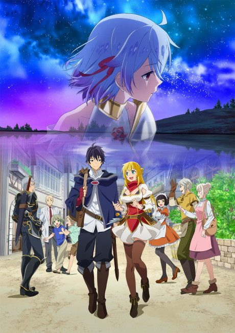
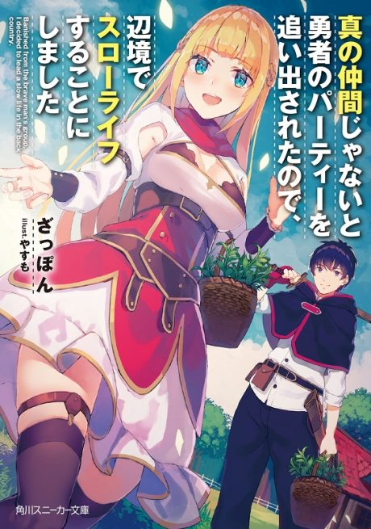

Banished from the Hero’s Party, I Decided to Live a Quiet Life in the Countryside
真の仲間じゃないと勇者のパーティーを追い出されたので、辺境でスローライフすることにしました
Red is kicked out of the hero's party and moves to the countryside to open a medicine shop, and soon the princess he once fought beside comes to live with him.
We haven't found where the anime ends in the light novel yet.
6.8AniList score
—Animeter, no votes yet
25episodes, 2 seasons
Rate it or report where you stopped
2 seasons, 25 episodes
In airing order. Episode numbers on this site count straight through every season, so season 2 starts at episode 14.
1
2021 · TV
Banished from the Hero’s Party, I Decided to Live a Quiet Life in the Countryside
Episodes1–1313 ep
2
2024 · TV
Banished from the Hero’s Party, I Decided to Live a Quiet Life in the Countryside Season 2
Episodes14–2512 ep
Sources: AniList
More like Banished from the Hero’s Party, I Decided to Live a Quiet Life in the Countryside
 Manga Vol. 36.6
Manga Vol. 36.6
 Manga Vol. 157.6
Manga Vol. 157.6
 Original6.0
Original6.0
 Original8.0
Original8.0
 VN7.4
VN7.4
 Manga Ch. 337.7
Manga Ch. 337.7
 Manga Vol. 26.9
Manga Vol. 26.9
 Manga Vol. 117.7
Manga Vol. 117.7
 Manga Ch. 1118.0
Manga Ch. 1118.0
 Done7.3
Done7.3
 Manga Ch. 819.1
Manga Ch. 819.1
 Unclear7.7
Unclear7.7